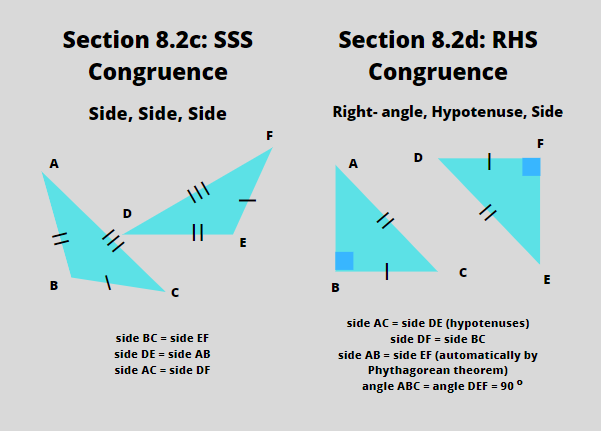

Congruence in math refers to identifying if two of the same shape are identical based on the length of their sides and the angles between them. Most shapes are already congruent with one another, such as two circles, because they have no sides, and two squares, because all its sides have the same length. Congruence in math is useful because usually, questions ask you to find the length of a certain side or an unknown angle. Congruence tells you which angle is equal to which, or which side has the same length as another side. This chapter is going to focus on the congruence of triangles, since it's the shape that can vary the most in angles and length of sides.
a. ASA (Angle, Side, Angle)
The first type of triangle congruence is the angle, side, angle congruence, or ASA for short. If there are two triangles, and one of their 3 sides are equal when two angles beside that side are also equal with the other triangle's, it's an congruent through the ASA congruence.
b. SAS (Side, Angle, Side)
The second type of congruence is the SAS congruence, or the side, angle, side congruence. This is similar with ASA, but the equal one in the middle is the angle. If two triangles have one of its angles equal to each other, and the two sides that create the angle are also equal to one another, the triangles are congruent by SAS congruence.
c. SSS (Side, Side, Side)
The third type of congruence is the SSS congruence, all three sides of both triangles are the same. This doesn't necessarily mean that all triangles that are congruent through the SSS congruence have to be equilateral triangles, but as long as the other triangle has its three sides equal to the three sides of the first triangle, then they are congruent through SSS congruence. If you're wondering why there isn't an AAA congruence, it's because when you test if two angles are equal, you immediately know that the triangles are congruent, because when you know two of the 3 angles in a triangle, you can find the third one.
d. RHS (Right-angle, Hypotenuse, Side)
The last type of congruence is the right-angle, hypotenuse, side congruence, or RHS. It only applies to right-angled triangles. If two triangles both have a right angle, it should have a hypotenuse. If the hypotenuse are equal in length, and if both triangles have one of the two remaining sides to be equal, then the triangles are congruent by the RHS rule. Only one remainingg side aside from the hypotenuse needs to be tested, because using the Pythagorean theorem, when you have two sides of a right-angled triangle, you can always find the third.